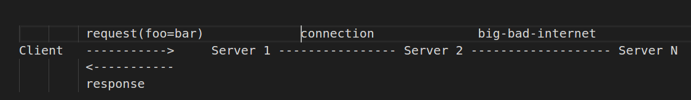
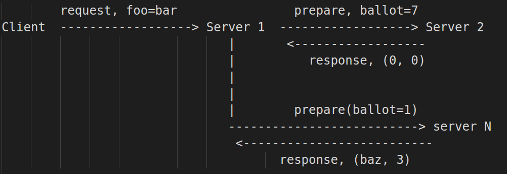
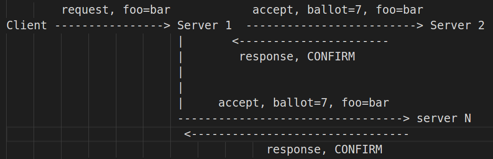
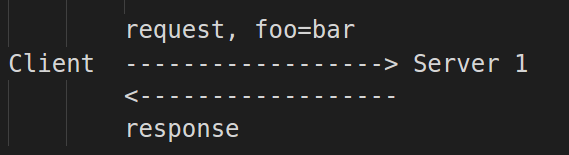

Exploring consensus via python.(24 Mar 2018) Intro How do you get different computers that are part of a larger cluster to agree on what the value of something is? Suppose a client sent a request to server 1 to set the value of a key foo to the value bar. However, server 1 is part of a cluster of N servers(there are good reasons for having servers be part of a cluster, but we wont got into that)  Thus the request; set foo=bar needs to be propagated to all the servers. A naive approach would go something like; When server 1 gets the request, it also sends that request to sever 2 which in turn sends the request to server 3 ... However, a couple of problems arise with that approach; - What happens if there is some network error anywhere in that chain of requests? - Does the client have to wait for all those round-trips of requests to finish before it can get a response? - What if a 3 letter named goverment agency intercepts the request and changes it from foo=bar to foo=baz? - And so forth How we get computers to agree on the value of some data, is through consensus. There are a number of consensus protocols with varying degrees of usage in the real world. Here is a wikipedia rabbit hole to get you started. For the remainder of this post, we will explore one of those algorithms; CASPaxos. CASPaxos CASPaxos is a consensus algorithm by Denis Rystsov, the white paper is available from arxiv. The paper is surprisingly simple and also easy to comprehend. In a nutshell, the algorithm goes like this; A. Prepare phase:  1. client sends request to server 1. Server 1 generates a ballot number and sends that ballot to all other servers 2. The other servers will return a conflict(to server 1) if they already saw a greater ballot number. Persists the ballot number and returns a confirmation either with an empty value (if they haven't accepted any value yet) or with a tuple of an accepted value and its ballot number. 3. Server 1 waits for a majority of servers to respond with confirmation. B. Accept phase:  4. Server 1 sends the earlier generated ballot number and value(ie foo=bar) to all other servers. 5. The servers will return a conflict if they already saw a greater ballot number. They mark the received ballot number and value as the accepted value and returns a confirmation. C. End:  6. Server 1 waits for a majority of servers to respond with confirmation. 7. Returns a response to the client. Disclaimer: The description above is not 100% correct. I have left out a number of important details(eg in the paper, the client doesn't send a request like, set foo=bar, instead it sends a change function). You should read the actual paper for full details. However, the description above will suffice for now. python Lets explore how the algorithm achieves consensus, we will use python to try and demonstrate this. We are going to build a proto-type of a distributed storage system, and we will use CASPaxos to achieve consensus among the various servers in our storage system. First of all, the code for the proposer(server1 in our CASPaxos description above.)
import time
import random
class Proposer(object):
def __init__(self, acceptors):
if not isinstance(acceptors, list):
raise ValueError(
"acceptors ought to be a list of child classes of Acceptor object")
self.acceptors = acceptors
# since we need to have 2F+1 acceptors to tolerate F failures, then:
self.F = (len(self.acceptors) - 1) / 2
self.state = 0
def receive(self, state):
"""
receives request from client. The request will be a dictionary like; state={'foo': 'bar'}
"""
ballot_number = self.generate_ballot_number()
self.send_prepare(ballot_number=ballot_number)
result = self.send_accept(state, ballot_number)
return result
def generate_ballot_number(self, notLessThan=0):
# we should never generate a random number that is equal to zero
# since Acceptor.promise defaults to 0
ballot_number = random.randint(notLessThan + 1, 100)
return ballot_number
def send_prepare(self, ballot_number):
# list of tuples conatining accepted (value, ballotNumOfAcceptedValue)
confirmations = []
for acceptor in self.acceptors:
confirmation = acceptor.prepare(ballot_number=ballot_number)
if confirmation[0] == "CONFLICT":
# CONFLICT, do something
pass
else:
confirmations.append(confirmation)
# Wait for the F + 1 confirmations
while True:
if len(confirmations) >= self.F + 1:
break
else:
# sleep then check again
time.sleep(5)
total_list_of_confirmation_values = []
for i in confirmations:
total_list_of_confirmation_values.append(i[0])
if sum(total_list_of_confirmation_values) == 0:
# we are using 0 as PHI
self.state = 0
else:
highest_confirmation = self.get_highest_confirmation(confirmations)
self.state = highest_confirmation[0]
def get_highest_confirmation(self, confirmations):
ballots = []
for i in confirmations:
ballots.append(i[1])
ballots = sorted(ballots)
highestBallot = ballots[len(ballots) - 1]
for i in confirmations:
if i[1] == highestBallot:
return i
def send_accept(self, state, ballot_number):
self.state = state
acceptations = []
for acceptor in self.acceptors:
acceptation = acceptor.accept(
ballot_number=ballot_number, new_state=self.state)
if acceptation[0] == "CONFLICT":
# CONFLICT, do something
pass
else:
acceptations.append(acceptation)
# Wait for the F + 1 confirmations
while True:
if len(acceptations) >= self.F + 1:
break
else:
# sleep then check again
time.sleep(5)
# Returns the new state to the client.
return self.state
class Acceptor(object):
promise = 0 # ballot number
accepted = (0, 0)
def __init__(self, name):
self.name = name
def prepare(self, ballot_number):
if self.promise > ballot_number:
return ("CONFLICT", "CONFLICT")
# this ought to be flushed to disk
self.promise = ballot_number
return self.accepted
def accept(self, ballot_number, new_state):
if self.promise > ballot_number:
return ("CONFLICT", "CONFLICT")
elif self.accepted[1] > ballot_number:
return ("CONFLICT", "CONFLICT")
# these two ought to be flushed to disk
# http://rystsov.info/2015/09/16/how-paxos-works.html
self.promise = 0
self.accepted = (new_state, ballot_number)
return ("CONFIRM", "CONFIRM")
a1 = Acceptor(name='a1')
a2 = Acceptor(name='a2')
a3 = Acceptor(name='a3')
a4 = Acceptor(name='a4')
a5 = Acceptor(name='a5')
acceptorsList = [a1, a2, a3, a4, a5]
p = Proposer(acceptors=acceptorsList)
response = p.receive(state={'foo': 'bar'})
print "response:", response
for acceptor in acceptorsList:
print "value persisted by acceptor={0} is {1}".format(acceptor.name, acceptor.accepted[0])
response: {'foo': 'bar'}
value persisted by acceptor=a1 is {'foo': 'bar'}
value persisted by acceptor=a2 is {'foo': 'bar'}
value persisted by acceptor=a3 is {'foo': 'bar'}
value persisted by acceptor=a4 is {'foo': 'bar'}
value persisted by acceptor=a5 is {'foo': 'bar'}